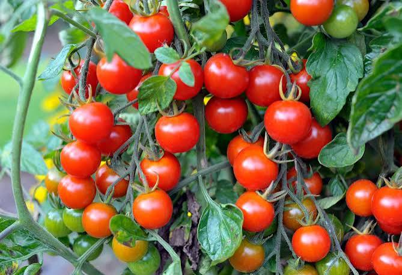

📖 Descrição
O Tomate Cereja (Solanum lycopersicum) produz frutos pequenos, doces e muito saborosos. É amplamente cultivado em hortas escolares por ser de fácil manejo e excelente para incentivar a alimentação saudável.
🌱 Cuidados
- Necessita de sol pleno.
- Prefere solo fértil e bem drenado.
- Manter irrigação regular sem encharcar.
- Realizar tutoramento da planta.
- Adubar periodicamente com matéria orgânica.
🌎 Origem
Originário da região dos Andes, na América do Sul.
🐝 Atrai quais polinizadores?
Atrai principalmente abelhas e outros insetos polinizadores que auxiliam na formação dos frutos.
🍽️ Parte comestível
Frutos.
💚 Benefícios para a saúde
- Rico em licopeno.
- Fonte de vitaminas A e C.
- Possui ação antioxidante.
- Contribui para a saúde do coração.
- Ajuda no fortalecimento do sistema imunológico.
🌼 Curiosidade
O nome "cereja" refere-se ao pequeno tamanho dos frutos, que lembram cerejas e costumam ser mais doces que os tomates tradicionais.
🌍 Importância para o meio ambiente
O cultivo do tomate cereja favorece a biodiversidade, incentiva a produção de alimentos saudáveis e contribui para o aprendizado sobre agricultura sustentável.
🌾 Época de plantio
Pode ser cultivado durante praticamente todo o ano em regiões de clima quente e com boa luminosidade.
📱 Acesse esta página pelo QR Code

Escaneie o QR Code para acessar esta página pelo celular.